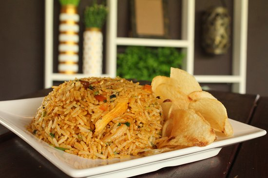

Pollo: 1 pechuga grande o 1 kg de pollo con hueso (para hervir y desmenuzar).
Arroz: 2 tazas de arroz blanco (cocido previamente o crudo según el método de cocción).
Achiote: 2 a 3 cucharadas de pasta o aceite de achiote (indispensable para el color).
Olores (Sofrito): 1 cebolla mediana picada finamente. 1 chile dulce (pimiento) rojo o verde en cubos. 3 a 4 dientes de ajo picados. 2 ramitas de apio picadas. Culantro fresco picado al gusto.
Vegetales: 1 taza de zanahoria en apio o cubitos pequeños. 1 taza de arvejas (chícharos) y opcionalmente elotes (maíz dulce).
Papas fritas en romitos o chips de plátano verde (patacones) como acompañamiento.

Comentarios
Julio Q.
Muy fácil de preparar!
Logan H.
Me encanta, solo cambia la proteina cuando quieras!